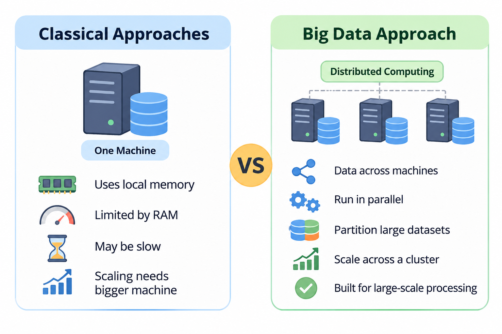
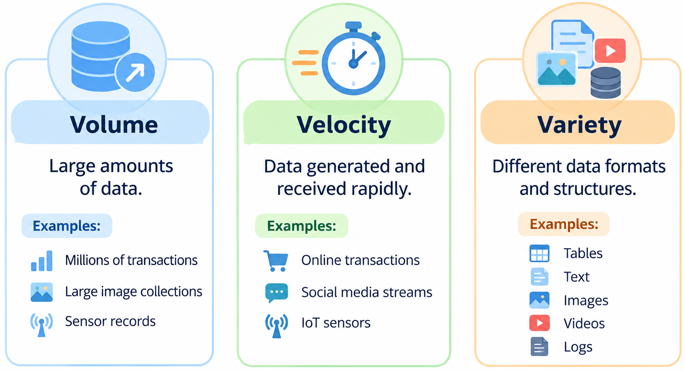
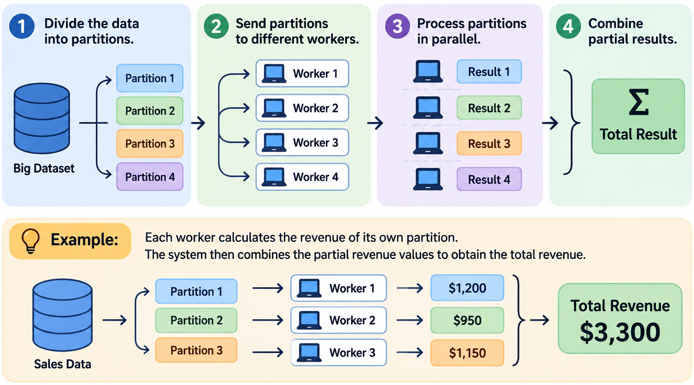

| transaction_id | customer_id | product | quantity | unit_price | revenue | |
|---|---|---|---|---|---|---|
| 0 | 1 | 101 | Laptop | 1 | 900 | 900 |
| 1 | 2 | 102 | Phone | 2 | 500 | 1000 |
| 2 | 3 | 101 | Mouse | 3 | 20 | 60 |
| 3 | 4 | 103 | Laptop | 1 | 900 | 900 |
Big Data Analysis: Spark & Dask
INS-605: Data Analysis II

Lecturer: Dr. Sothea HAS
1 Motivation: Why Big Data?
1.1 A Practical Motivation
- Imagine that we are analyzing an online retail platform where every transaction contains:
| Transaction ID | Customer ID | Product ID | Quantity | Unit price | Transaction date |
|---|---|---|---|---|---|
| 0001 | 101 | Laptop | 1 | 900 | 2024-01-01 |
| \(\dots\) | \(\dots\) | \(\dots\) | \(\dots\) | \(\dots\) | \(\dots\) |
- Simple business questions we might want to answer:
- What is the total revenue to date?
- Which products generate the highest revenue?
- Who are the most valuable customers?
- How does revenue evolve over time?
- These questions can become very challenging to answer when the dataset grows to hundreds of millions of transactions.
1.2 Starting with Pandas
- We can easily analyze a small dataset using Pandas.
- Total revenue for each product can be computed:
| product | Laptop | Mouse | Phone |
|---|---|---|---|
| revenue | 1800 | 60 | 1000 |
- Things get more complicated with hundreds of millions of transactions. The dataset may not fit in memory, and computations may become slow.
1.3 When Does Pandas Fails?

1.4 The 3Vs of Big Data

- Other dimensions are sometimes added, such as veracity (data quality) and value (usefulness).
2 From Classical to Distributed Computing
2.1 Distributed Computing

- Distributed computing divides a large dataset into smaller partitions and processes them in parallel across multiple workers (machines or CPU cores).
- This allows for scalability and fault tolerance. If one worker fails, others can continue processing.
2.2 Data Partitioning
2.3 Pandas vs PySpark vs Dask
| Feature | Pandas |
PySpark  |
Dask |
|---|---|---|---|
| Main purpose | Data analysis | Distributed processing | Parallel computing |
| Execution | Local | Distributed or local | Local or distributed |
| API | Pandas | Similar to SQL/Pandas | Similar to Pandas |
| Lazy execution | No | Yes | Yes |
| Large datasets | Limited by local resources | Designed for large-scale data | Designed for parallel computing |
| Ecosystem | Python | Apache Spark | Python |
Our focus: Learn how to move from familiar Pandas operations to PySpark, then understand where Dask fits.
3 Getting Started with PySpark
3.1 Installing PySpark
- Apache Spark is a distributed computing framework.
- PySpark is the Python interface to Apache Spark.
- Its operation is close to
PandasandSQL.
- PySpark also requires a compatible
Javaruntime. Make sure Java is installed and available in your environment.
Important: For this introduction, we will run Spark locally on our computer. The same programming concepts can later be used on a Spark cluster.
3.2 Getting Start with a Spark Session
- In PySpark, we first create a Spark session.
SparkSession.builder: entry point to configure aSparksession.appName(): name of your application/session.master("local[*]"): run locally using all available CPU cores.getOrCreate(): create or reuse a Spark session.
Intuition: Pandas works directly with local DataFrames. PySpark uses a Spark session to coordinate data processing.
Creating a PySpark DataFrame
We can create a Spark DataFrame from the same data used in Pandas.
Code
sales = [
(1, 101, "Laptop", 1, 900),
(2, 102, "Phone", 2, 500),
(3, 101, "Mouse", 3, 20),
(4, 103, "Laptop", 1, 900),
(5, 102, "Phone", 1, 500)
]
columns = [
"transaction_id",
"customer_id",
"product",
"quantity",
"unit_price"
]
sdf = spark.createDataFrame(sales, columns)
sdf.show() # we show the data+--------------+-----------+-------+--------+----------+
|transaction_id|customer_id|product|quantity|unit_price|
+--------------+-----------+-------+--------+----------+
| 1| 101| Laptop| 1| 900|
| 2| 102| Phone| 2| 500|
| 3| 101| Mouse| 3| 20|
| 4| 103| Laptop| 1| 900|
| 5| 102| Phone| 1| 500|
+--------------+-----------+-------+--------+----------+
Notice that we use show() rather than simply writing the DataFrame name as we often do in Pandas.
Loading a CSV File
- The most common way to start an analysis is to load data from a file.
- The main difference is the interface. Spark reads and represents the data as a Spark DataFrame, which can be processed using its execution engine.
Inspecting the Data
4 Basic Data Analysis with PySpark
4.1 Selecting Columns
4.2 Filtering Rows
4.3 Creating New Variables
Suppose we want to calculate the revenue of each transaction:
\[ \text{Revenue} = \text{Quantity} \times \text{Unit Price} \]
withColumn() creates a new column or replaces an existing one.
4.4 Grouping and Aggregation
Business question: Which products generate the highest revenue?
The idea is the same as Pandas: group observations and calculate summary statistics. Spark distributes the work when the data is partitioned across workers.
4.5 Joining DataFrames
- Suppose we have another dataset containing customer information.
- The logic of joining DataFrames is familiar. However, joins in distributed systems may require data to be exchanged between workers, which can be expensive.
4.6 Using SQL with PySpark
- Spark also allows us to write
SQLqueries directly. - First, register a DataFrame as a temporary SQL table.
- Then execute SQL:
Code
+-------+-------------+
|product|total_revenue|
+-------+-------------+
| Laptop| 1800|
| Phone| 1500|
| Mouse| 60|
+-------+-------------+
Why SQL?
- Familiar to database users.
- Convenient for complex queries.
- Useful when combining data analysis with database workflows.
4.7 Understanding Lazy Evaluation
One important difference between Pandas and Spark is lazy evaluation.
Pandas
The computation is performed when the operation is executed.
Transformations define what we want to do:
select()filter()withColumn()groupBy()join()
Actions trigger computation:
show()count()collect()write()
4.8 Why Is Lazy Evaluation Useful?
Spark can optimize a sequence of transformations before executing it.
== Physical Plan ==
AdaptiveSparkPlan isFinalPlan=false
+- HashAggregate(keys=[product#2], functions=[sum(quantity#3L)])
+- Exchange hashpartitioning(product#2, 200), ENSURE_REQUIREMENTS, [plan_id=92]
+- HashAggregate(keys=[product#2], functions=[partial_sum(quantity#3L)])
+- Project [product#2, quantity#3L]
+- Filter (isnotnull(quantity#3L) AND (quantity#3L > 1))
+- Scan ExistingRDD[transaction_id#0L,customer_id#1L,product#2,quantity#3L,unit_price#4L]
explain() displays the execution plan. It helps us understand how Spark intends to process the data.
Key idea: Spark does not necessarily execute every operation immediately. It can optimize the overall computation plan before running it.
4.9 Saving Results
Important: Spark generally writes output to a directory containing one or more part files, rather than creating one CSV file directly.
4.10 A Complete PySpark Workflow
Let’s combine the operations into one analysis.
Objective: Find the top products by total revenue.
+-------+-------------+
|product|total_revenue|
+-------+-------------+
| Laptop| 1800|
| Phone| 1500|
| Mouse| 60|
+-------+-------------+
This is a typical data analysis pipeline:
Load → Transform → Aggregate → Sort → Save
5 Introduction to Dask
5.1 What Is Dask?
- Dask is a Python library for parallel and distributed computing.
- It provides interfaces similar to familiar Python libraries.
- Dask DataFrame is designed for working with larger-than-memory tabular datasets.
- It can execute computations in parallel on a local machine or across a cluster.
Intuition: Dask aims to make parallel computing more accessible to Python users, particularly those already familiar with Pandas.
5.2 Dask DataFrame
Install Dask:
Load the data:
5.3 Pandas vs Dask
Question: Calculate the total revenue by product.
Pandas
.compute() triggers the computation and returns the result.
5.4 Understanding the Difference
| Concept | Pandas | Dask | PySpark |
|---|---|---|---|
| DataFrame | Local | Partitioned | Distributed |
| Execution | Eager | Lazy | Lazy |
| Parallelism | Limited | Yes | Yes |
| Main interface | Python | Pandas-like | SQL/DataFrame |
| Typical use | Small/medium data | Parallel Python workflows | Large-scale distributed analytics |
Dask is not simply a replacement for Pandas or Spark. The appropriate framework depends on the dataset, available infrastructure, and type of computation.
6 Summary and Discussion
6.1 Summary
- Big Data becomes important when data volume, velocity, or variety creates challenges for traditional processing.
- Distributed computing divides data into partitions and processes them in parallel.
- PySpark provides a DataFrame and SQL interface for large-scale distributed data processing.
- Dask brings parallel and distributed computing to the Python ecosystem with familiar interfaces.
- The fundamental operations remain familiar: select, filter, transform, group, aggregate, and join.
6.2 Which Framework Should We Use?
| Situation | Suggested tool |
|---|---|
| Small dataset fitting comfortably in memory | Pandas |
| Local parallel computing with Python | Dask |
| Large-scale distributed data processing | PySpark |
| SQL-based distributed analytics | PySpark |
Remark: Spark and Dask can also run locally. Using them does not automatically make a small computation faster. Their benefits become more relevant when data size and computational requirements justify their overhead.
6.3 Short Classroom Exercise
Scenario: An online retail company has 50 million transactions.
The company wants to identify its top 10 products by total revenue.
Questions:
- Would you choose Pandas, Dask, or PySpark? Why?
- Which columns are required?
- Which transformations are necessary?
- How would you calculate total revenue by product?
- How would you sort the results and select the top 10?
Expected workflow:
Load data → Create revenue → Group by product → Sum revenue → Sort → Select top 10
6.4 Final Takeaway
The goal of Big Data technology is not to change how we think about data analysis. It is to allow familiar analytical operations to work at a much larger scale.
🥳 Yeahhhh 🥂!!!
Let’s take a break!